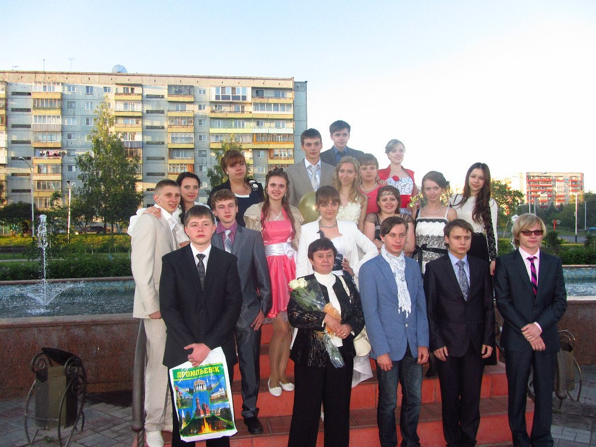
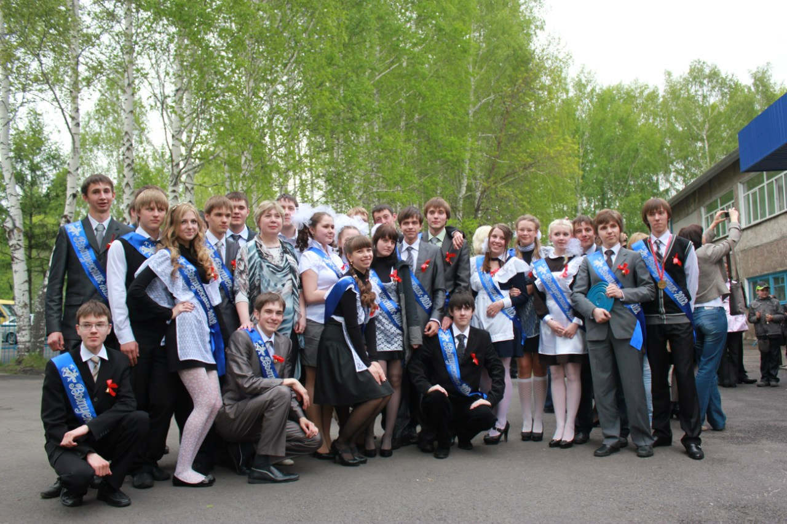
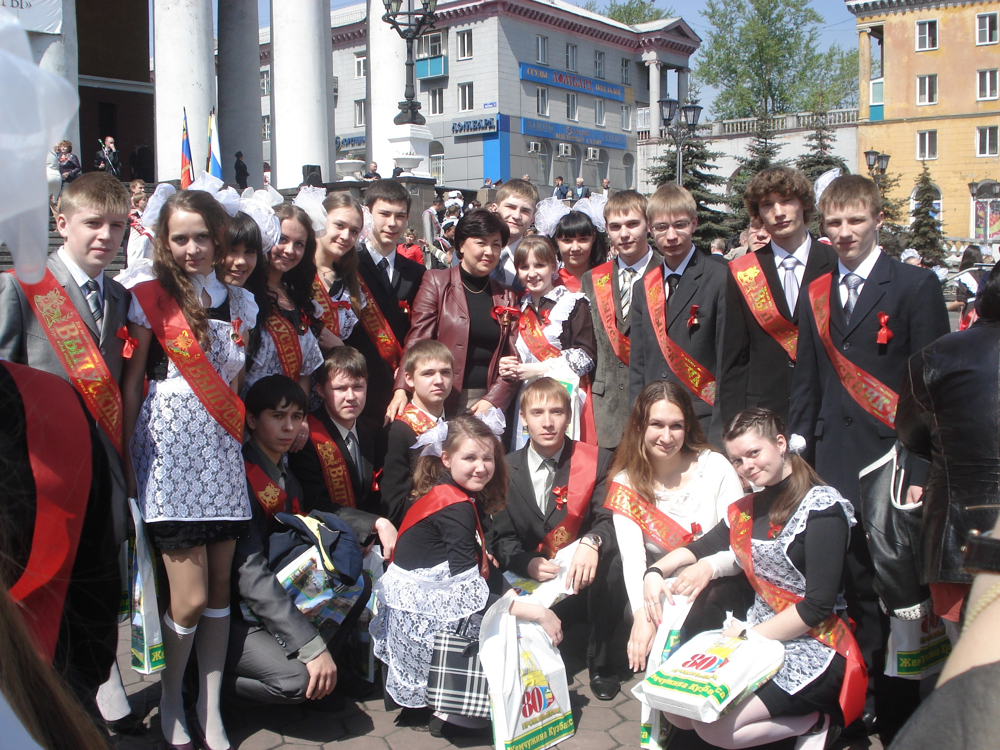
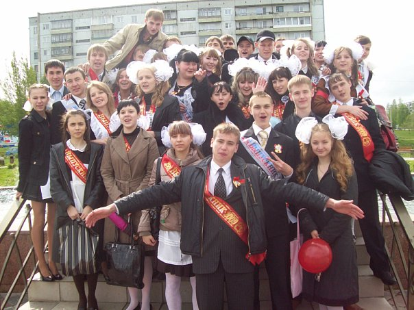

Муниципальное бюджетное общеобразовательное учреждение «Средняя общеобразовательная
школа с углубленным изучением отдельных предметов №32» (далее – Школа) открыто во 2
микрорайоне Тыргана 1 сентября 1973 года. Школа расположена в двух типовых корпусах, одним из
которых до 01.09.2017 являлось реконструированное и переоборудованное здание детского сада, в
котором располагалось здание начальной школы. В сентябре 2017 года учредитель передал в
пользование школы здание, в котором ранее располагался ПФ КемГУ по адресу: улица
Жолтовского, 14. В связи с этим был осуществлен переезд 8-11 классов в корпус на ул. Жолтовского,
14, учащихся 1-4 классов в корпус на ул. Гайдара,1. Таким образом, на ул.Гайдара, 1 учатся 1-7
классы и осуществляется практическая часть по химии для учащихся 8-11 классов, на ул.
Жолтовского, 14 обучаются школьники 8-11 классов.
Рядом со школой находятся и иные образовательные учреждения: школы №№11, 14, 15, 72.
В 1987 году школа первой в городе открывает класс углубленного изучения математики, с 1989
года классы физико-математического, химико-биологического и гуманитарного циклов. В 1990 году в
школе образовано научное общество учащихся, которое с 1992 года начинает проведение ежегодных
научно-практических конференций «Наука. Природа. Человек». В 1993 году начата инновационная
деятельность по изменению содержания образования в начальной школе: осуществляется переход на
четырехлетнее обучение, вводится изучение информатики и иностранного языка со 2-го класса,
открываются классы развивающего обучения по технологиям Д.Б.Эльконина - В.В. Давыдова, Л.В.
Занкова.
В 1998 году школа получила лицензию на отработку школы с углубленным изучением отдельных
предметов, в 1999 году – на оказание платных образовательных услуг. В 2001, 2006, 2010, 2015 г.г. мы
успешно прошли государственную аттестацию и аккредитацию на статус школы с углубленным
изучением отдельных предметов.
50-летие школы.

Выпуск. 2013 год.

Выпуск. 2012 год.

Выпуск. 2011 год.

Выпуск. 2009 год.
×